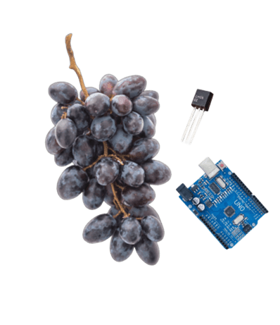

Tradição Protegida pela Precisão.
Na Wine View, acreditamos que a alma de um grande vinho tinto nasce no controle exato de cada grau Celsius.
HISTÓRIA
A WineView nasceu da observação de um contraste profundo no coração da vitivinicultura brasileira. Enquanto o setor movimenta biliões de reais e se moderniza a passos largos, muitos pequenos e médios produtores ainda enfrentam um desafio arcaico: a "cegueira" durante o processo de fermentação. A nossa história começa com a uva Cabernet Sauvignon. Conhecida como a "rainha das uvas tintas", ela exige um rigor técnico quase matemático para revelar o seu potencial de cor, taninos e aromas. No entanto, o processo de fermentação é, por natureza, instável; as leveduras trabalham gerando calor e gás carbónico, e um desvio de poucos graus pode significar a ruína de uma safra inteira. Ao vermos produtores dedicados perderem qualidade — e rentabilidade — por dependerem de medições manuais e imprecisas, decidimos que era hora de unir dois mundos: o saber milenar da vinificação e a precisão da tecnologia IoT (Internet das Coisas). A WineView não surgiu apenas para criar sensores, mas para democratizar o controlo. Inspirados pela excelência de gigantes como a Vinícola Aurora, desenvolvemos uma solução que permite ao pequeno produtor ter o mesmo nível de monitorização de uma grande indústria. O nosso sistema tornou-se o "olhar" que falta dentro do tanque, capturando variações térmicas em tempo real e garantindo que a fermentação ocorra na faixa ideal de 20°C a 30°C. Hoje, a nossa história é escrita em conjunto com os produtores que acreditam que a tradição e a tecnologia não são opostas, mas parceiras. A WineView existe para garantir que o esforço do campo se transforme, com segurança e ciência, num vinho de excelência.
NOSSA MISSÃO
Garantir a excelência na produção de vinhos através do monitoramento tecnológico de precisão, oferecendo aos produtores controle total sobre a fermentação alcoólica para preservar a essência, o sabor e o valor comercial de cada safra.
NOSSOS PILARES
Os pilares da WineView fundamentam-se na união entre a ciência de dados e a biologia da vinificação. O primeiro deles é a Precisão Tecnológica, que garante a captura rigorosa de dados térmicos para que a fermentação ocorra na faixa ideal para a Cabernet Sauvignon. Somado a isso, temos a Segurança Biológica, focada em monitorar o processo continuamente para evitar o estresse das leveduras e contaminações que possam comprometer a integridade da bebida. A Qualidade Sensorial é outro pilar essencial, assegurando que o controle de temperatura e CO2 preserve a cor, os taninos e os aromas autênticos da uva. Por fim, sustentamos nosso modelo na Eficiência Econômica e Sustentabilidade, elevando a competitividade de produtores em um mercado de bilhões de reais ao substituir medições manuais por automação, prevenindo perdas financeiras e garantindo a estabilidade das safras a longo prazo.
QUEM FAZ ACONTECER
A WineView é impulsionada por um time multidisciplinar que une a paixão pela vitivinicultura à expertise em tecnologia e análise de dados. Quem faz acontecer são mentes inquietas e comprometidas com a inovação no campo, focadas em transformar a complexidade da fermentação biológica em soluções digitais intuitivas e eficientes. Nossa equipe é composta por especialistas que compreendem que, por trás de cada gráfico de temperatura, existe o trabalho de uma vida inteira de um produtor e a busca pela taça perfeita. É essa união de competências técnicas em hardware, software e visão de mercado que nos permite traduzir os sinais silenciosos dos tanques em decisões estratégicas, garantindo que a tradição da Cabernet Sauvignon seja protegida pela precisão da era conectada.